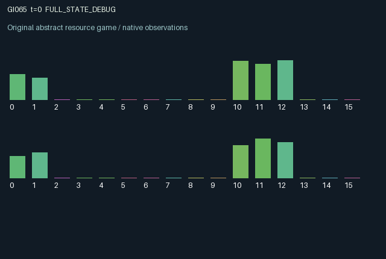

GI065 / LEGACY_ARRAY
astra-d2-00065: revocable counterparty insurance with delayed settlement
2 agents5 actions16 observation columns32 original horizonRuntime: PASS
Release verification episode
Untrained uniform legal actions. Actual JAX state sampled along the full original episode; full-state debug camera. No human performance or learning claim.

Run this game
crucibles play --game 65
Start Python locally, then open the address printed by the terminal. Installation, multiplayer, takeover and keyboard controls →
Objective, rewards & ending
Exact task contract
{
"termination": "Original kernel t >= 32; see mechanism and source"
}Declared per-step reward bounds: -1.0 to 1.0. Observability: source_defined.
Rules
Original mechanism document (historical status wording retained)
# astra-d2-00065: revocable counterparty insurance with delayed settlement This parentless source proposes linked project and insurance accounts. Each agent can fund its own project or lock liquidity as insurance for the other agent's outstanding project. Insurers receive a premium only when the insured project succeeds; failure transfers their collateral to the project owner. The project owner later redeems a perishable receivable. The mechanism is deliberately related to generic insurance, limited liquidity, counterparty commitment and settlement-delay problems. These familiar relations do not establish equivalence to any particular program, nor does this proposal claim nonisomorphism. Actions are 0 wait, 1 launch an own project, 2 underwrite the partner, 3 redeem own receivables, and 4 recall own outstanding insurance. All five actions remain legal; an action whose financial prerequisites are absent has no corresponding transaction. A launch costs 0.25 cash and installs a three-tick countdown. An already active project cannot be relaunched on its maturity step. Underwriting costs and locks 0.18 cash, requires the partner to have more than one countdown tick remaining, and permits only one active bond per issuer. Recall is allowed before the final tick, returns collateral, and incurs an immediate reward charge. Simultaneous decisions use the old project identities; no new project can receive insurance on its launch step. At maturity, a keyed random draw is compared with the owner's fixed private success probability. Uninsured success creates 0.40 receivables; insured success creates 0.35 for the owner, returns 0.18 collateral to the insurer and pays that insurer 0.05 cash. Insured failure creates 0.18 receivables for the owner and forfeits the insurer's collateral. Uninsured failure creates no receivable. All maturity events clear the corresponding bond and project. Redemption can include a receivable maturing on the current step, converts at most 0.45 into scored consumption, and recycles 75% as cash. Unredeemed credit decays by 3%. There is an explicit 0.015 cash endowment each step; cash and receivables are capped at one, with excess discarded. Those grants and caps are part of the toy mechanism, not a claim of financial conservation. The private success probability is initialized in [0.45,0.85] and remains fixed for the episode. A noisy public signal is initialized and resampled upon each launch, allowing repeated observations to inform underwriting. Observation columns 0..15 are own/other cash, own/other project principal divided by 0.25, own/other timer divided by 3, own/other issued bond divided by 0.18, own/other receivables, own private success probability, partner public signal, own public signal, own/other last redemption divided by 0.45, and time divided by 32. All account balances and public signals are visible; the other agent's exact success probability and future random outcomes are not. Each agent can change the other's future cash and receivables through underwriting or recall. Insurance competes with self-investment for liquidity; premium collection, failure coverage, asset expiry and the finite horizon create delayed incentives. No cooperation, profitability or learning benefit is assumed. Rewards are tanh of 1.6 times redeemed credit minus small launch, underwriting and recall charges, yielding a bounded [-1,1] utility. The source specifies A2/O16/U5, fixed array state, and a 32-step terminal observation without reset. Source authorship and documentation are complete. Runtime, compilation, intervention behavior, duplicate status, operational mechanism qualification and learning outcomes are untested by the author and await isolated assessment.
Commands
0Action 0; see mechanism and source
1Action 1; see mechanism and source
2Action 2; see mechanism and source
3Action 3; see mechanism and source
4Action 4; see mechanism and source
Roles & abilities
agent_0 Original legacy agent; see mechanism and source
agent_1 Original legacy agent; see mechanism and source
Observation permissions
Training receives only the original observation rows. Role cameras use declared visibility; debug cameras are explicitly marked. Local benchmark records log debug exposure and role takeover history.
Exact observation layout
[]
Entity visibility & attributes
[]
Actual verification & provenance
Per-game execution receipt
{
"game": "gi065",
"status": "PASS",
"verification_revision": 2,
"source_sha256": "f36c8e70681b0c67c79023f82746d891b260ab2ae534050815ca9d23a92c5cec",
"seed": 20261101,
"runtime": {
"jax": "0.4.38",
"numpy": "1.26.4",
"devices": [
"TFRT_CPU_0"
]
},
"dimensions": {
"num_agents": 2,
"observation_size": 16,
"num_actions": 5,
"max_steps": 32
},
"checks": {
"eager_reset": {
"status": "PASS",
"seconds": 0.9041402339935303
},
"observation_spaces_legal_masks": {
"status": "PASS",
"seconds": 0.16905832290649414
},
"eager_step": {
"status": "PASS",
"seconds": 0.7986412048339844
},
"jit_reset": {
"status": "PASS",
"seconds": 0.44942450523376465
},
"jit_step": {
"status": "PASS",
"seconds": 0.39257049560546875
},
"eager_jit_integer_parity_float_measurement": {
"status": "PASS",
"seconds": 0.0
},
"jit_vmap_reset": {
"status": "PASS",
"seconds": 0.3472468852996826
},
"jit_vmap_step": {
"status": "PASS",
"seconds": 0.47339892387390137
},
"outer_autoreset_api": {
"status": "PASS",
"seconds": 0.9460568428039551
},
"full_original_horizon_episode_and_render": {
"status": "PASS",
"seconds": 2.034209966659546
}
},
"human_scores": null,
"browser_controls": "PENDING",
"failures": [],
"elapsed_seconds": 6.940065383911133,
"float_parity_max_abs": 0.0,
"numerical_parity": "EXACT",
"raw_terminal_absorbing": "NOT_PART_OF_ORIGINAL_LEGACY_CONTRACT",
"terminal_outer_reset": "PASS",
"episode_steps": 32,
"scripted_random_returns": [
0.393026739358902,
0.1953062079846859
],
"terminal": true,
"demo_information": "FULL_STATE_DEBUG",
"demo_frames": 33,
"render_roles_checked": 2
}Chromium control verification
{
"game": "gi065",
"status": "PASS",
"human_scores": null,
"engineering": true,
"checks": [
"catalog_selected_and_real_native_reset",
"dom_queue_and_native_step",
"second_participant_ownership_and_native_joint_step",
"all_roles_individually_controllable_no_role_cap",
"explicit_debug_camera",
"release_to_pure_ai_without_reset"
],
"seconds": 3.3552818298339844
}Original identity and file hashes
{
"id": 65,
"key": "gi065",
"title": "astra-d2-00065: revocable counterparty insurance with delayed settlement",
"summary": "",
"tags": [],
"family": "legacy_array",
"dimensions": {
"num_agents": 2,
"observation_size": 16,
"num_actions": 5,
"max_steps": 32
},
"source_sha256": "f36c8e70681b0c67c79023f82746d891b260ab2ae534050815ca9d23a92c5cec",
"manifest_sha256": "be5ba99de3f9f5310cd28d2bc419c7c28f71e97ac75ebe087076035945aa8bdf",
"files": [
{
"file": "candidate.py",
"sha256": "f36c8e70681b0c67c79023f82746d891b260ab2ae534050815ca9d23a92c5cec",
"bytes": 5429,
"origin": "work/exp_2/astra_generation/discovery_v2/initial/candidate_00065/attempt_00/candidate.py"
},
{
"file": "mechanism.md",
"sha256": "8e1315452fe30daf4907e7fe4d6b98e52e93eecfdd9ea63d04c5e1d8448d7596",
"bytes": 3741,
"origin": "work/exp_2/astra_generation/discovery_v2/initial/candidate_00065/attempt_00/mechanism.md"
}
],
"original_status": "LEGACY_SOURCE",
"original_saved_replay": false,
"release_validation": "PASS",
"human_scores": null,
"browser_validation": "PASS"
}